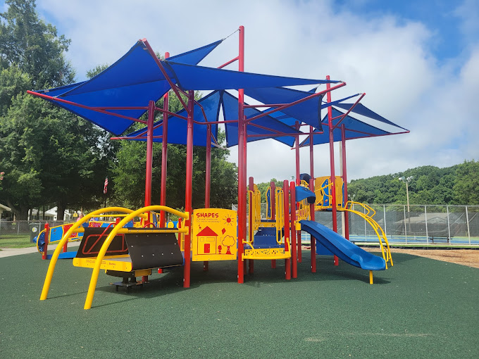
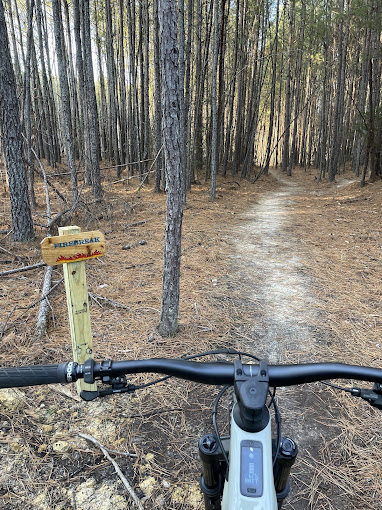
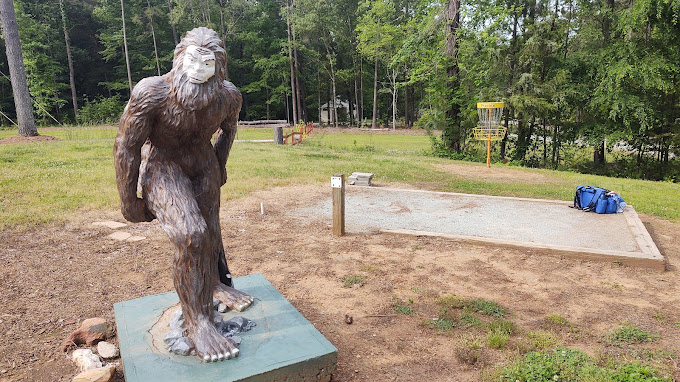
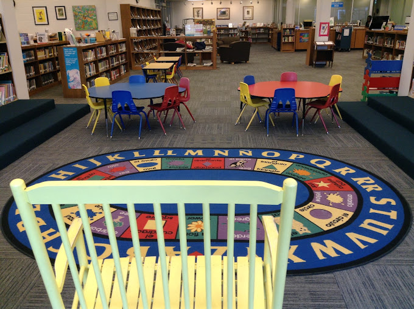
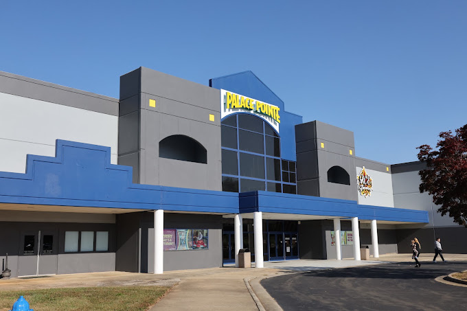

Roxboro has more to offer outdoors than indoors, so most of our outings revolve around the weather. When it's nice we head to a park or playground, and when it isn't we lean on the library, the weekly playgroup, and a few indoor spots that cater more to older kids. Everything below is a place I've been to or know well, and I've noted what ages each one suits best so you aren't guessing.
Outdoors
Huck Sansbury Recreation Complex
Best for: toddlers through older kids
Address: 425 Long Ave, Roxboro, NC 27573
Hours:
- Open 24/7
This is the county's main recreation complex, with a playground, a picnic shelter, a walking track, a gym, and ball fields, plus tennis and pickleball courts. It's a good one to bring a mixed-age group to, since the little ones can use the playground while older kids run the track or play ball.

Roxboro Rotary Centennial Park
Best for: families who like to hike
Address: 909 Stan's Way, Rougemont, NC 27572
Hours:
- Open 24/7
This is the brand new park with hiking trails, and it's not far from town. It's located in a lush 281 acre forest featuring an accessible walking track, picnic areas, and miles of multi-use biking and hiking trails.

Mayo Lake Park
Best for: a full day out
Address: 1013 Neal's Store Rd, Roxboro, NC 27574
Park Hours:
- Sunrise - Sunset
Office Hours:
- Mon-Fri - 8:30am-5pm
- Sat-Sun - Closed
This is a bigger outing with three playgrounds, about six miles of natural trails, eight picnic shelters, an ampitheater, and an accessible fishing pier. You can also rent canoes, kayaks, and paddle boards on the lake, and there's a nine-hole disc golf course. If you'd like to stay a while, there are also cabins and camping plots to rent right by the water.

Indoors & Events
Person County Partnership for Children playgroups
Best for: ages 0-5, with a parent or caregiver
Address: S. Main St., Roxboro, NC 27573
Hours:
- Friday - 10am-11:30am
They run a weekly themed playgroup on Fridays from 10 to 11:30 am for parents and kids from birth to age 5. It's one of the few indoor options for little ones in town, and it's where I met a lot of other parents.
Person County Public Library
Best for: Kids from 0-65+
Address: 319 S Main St, Roxboro, NC 27573
Hours:
- Sunday - Closed
- Monday - 9am-6pm
- Tuesday - 9am-7pm
- Wednesday - 9am-5pm
- Thursday - 9am-5pm
- Friday - 9am-5pm
- Saturday - 9am-3pm
Storytime and a craft happen on Mondays and Thursdays at 10:30 am. They also have events all month for older kids, adults, and seniors, so be sure to check their facebook page for the most up-to-date calendar. It also happens to be the end of my favorite stroller route, which runs from the Kirby Theater or the Person County Museum of History to the library and back, about a mile round trip.

Kirby Cultural Arts Complex
Best for: school-aged kids, with something for everyone
Address: 304 S. Morgan St., Roxboro, NC 27573
Hours:
- Sun-Mon - Closed
- Tues-Fri - 1pm-5pm
- Saturday - 10am-4pm
The Kirby is a former movie palace on North Main Street, and it's the heart of the arts in uptown Roxboro, which also makes it a good stop on our stroller route. The theater hosts community productions and touring acts, the two galleries change their exhibits every month, and the Learning Studios offer walk-in ceramic painting that's easy to do with kids. On the first Friday of every month there's also a free movie in the main auditorium.
Palace Pointe
Best for: older kids & adults
Address: 5050 Durham Rd, Roxboro, NC 27574
Hours:
- Sunday - 12pm-9pm
- Mon-Thu - 4pm-9pm
- Friday - 4pm-12am
- Saturday - 12pm-12am
Palace Pointe is bowling, skating, an arcade, laser tag, gel blasters, movies, and dining all under one roof. It's open in the afternoons and evenings on weekdays (noon on weekends), so it isn't a morning option. The best family deals are on Sundays, when kids 12 and under eat free with a paid adult entrée at Crazy Dragon & Tavern (dine-in only), and the weekday deal days, which run $2 bowling on Tuesdays, half-price arcade on Wednesdays, and $2 skating on Thursdays. Check their calendar before you go, since events change.
